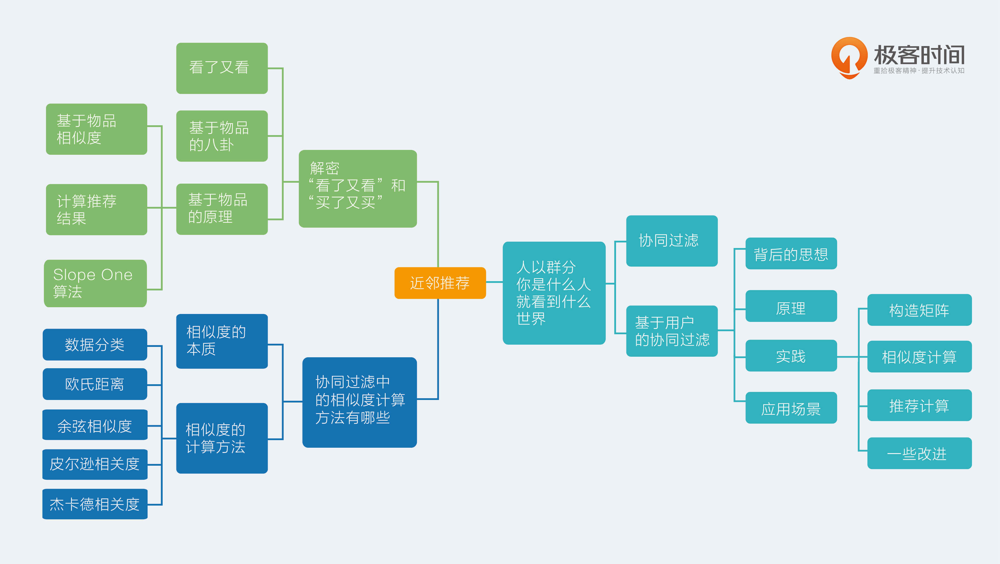

- 00 开篇词 用知识去对抗技术不平等.md
- 01 你真的需要个性化推荐系统吗_.md
- 02 个性化推荐系统有哪些绕不开的经典问题？.md
- 03 这些你必须应该具备的思维模式.md
- 04 画鬼容易画人难：用户画像的“能”和“不能”.md
- 05 从文本到用户画像有多远.md
- 06 超越标签的内容推荐系统.md
- 07 人以群分，你是什么人就看到什么世界.md
- 08 解密“看了又看”和“买了又买”.md
- 09 协同过滤中的相似度计算方法有哪些.md
- 10 那些在Netflix Prize中大放异彩的推荐算法.md
- 11 Facebook是怎么为十亿人互相推荐好友的.md
- 12 如果关注排序效果，那么这个模型可以帮到你.md
- 13 经典模型融合办法：线性模型和树模型的组合拳.md
- 14 一网打尽协同过滤、矩阵分解和线性模型.md
- 15 深度和宽度兼具的融合模型 Wide and Deep.md
- 16 简单却有效的Bandit算法.md
- 17 结合上下文信息的Bandit算法.md
- 18 如何将Bandit算法与协同过滤结合使用.md
- 19 深度学习在推荐系统中的应用有哪些_.md
- 20 用RNN构建个性化音乐播单.md
- 21 构建一个科学的排行榜体系.md
- 22 实用的加权采样算法.md
- 23 推荐候选池的去重策略.md
- 24 典型的信息流架构是什么样的.md
- 25 Netflix个性化推荐架构.md
- 26 总览推荐架构和搜索、广告的关系.md
- 27 巧妇难为无米之炊：数据采集关键要素.md
- 28 让你的推荐系统反应更快：实时推荐.md
- 29 让数据驱动落地，你需要一个实验平台.md
- 30 推荐系统服务化、存储选型及API设计.md
- 31 推荐系统的测试方法及常用指标介绍.md
- 32 道高一尺魔高一丈：推荐系统的攻防.md
- 33 和推荐系统有关的开源工具及框架介绍.md
- 34 推荐系统在互联网产品商业链条中的地位.md
- 35 说说信息流的前世今生.md
- 36 组建推荐团队及工程师的学习路径.md
- 加餐 推荐系统的参考阅读.md
- 结束语 遇“荐”之后，江湖再见.md
09 协同过滤中的相似度计算方法有哪些
今天，我们来聊聊协同过滤中的相似度计算方法有哪些。
相似度的本质
推荐系统中，推荐算法分为两个门派，一个是机器学习派，另一个就是相似度门派。机器学习派是后起之秀，而相似度派则是泰山北斗，以致撑起来推荐系统的半壁江山。
近邻推荐顾名思义就是在地理位置上住得近。如果用户有个邻居，那么社交软件上把邻居推荐给他在直观上就很合理，当然，如果邻居姓王的话，就不要推荐了。
这里说的近邻，并不一定只是在三维空间下的地理位置的近邻，在任意高维空间都可以找到近邻，尤其是当用户和物品的特征维度都很高时，要找到用户隔壁的邻居，就不是那么直观，需要选择好用适合的相似度度量办法。
近邻推荐的核心就是相似度计算方法的选择，由于近邻推荐并没有采用最优化思路，所以效果通常取决于矩阵的量化方式和相似度的选择。
相似度，与之配套的还有另一个概念就是距离，两者都是用来量化两个物体在高维空间中的亲疏程度的，它们是硬币的两面。
推荐算法中的相似度门派，实际上有这么一个潜在假设：如果两个物体很相似，也就是距离很近，那么这两个物体就很容易产生一样的动作。
如果两篇新闻很相似，那么他们很容易被同一个人先后点击阅读，如果两个用户很相似，那么他们就很容易点击同一个新闻。这种符合直觉的假设，大部分时候很奏效。
其实属于另一门派的推荐算法——机器学习中，也有很多算法在某种角度看做是相似度度量。
例如，逻辑回归或者线性回归中，一边是特征向量，另一边是模型参数向量，两者的点积运算，就可以看做是相似度计算，只不过其中的模型参数向量值并不是人肉指定的，而是从数据中由优化算法自动总结出来的。
在近邻推荐中，最常用的相似度是余弦相似度。然而可以选用的相似度并不只是余弦相似度，还有欧氏距离、皮尔逊相关度、自适应的余弦相似度、局部敏感哈希等。使用场景各不相同，今天，我会分别一一介绍如下。
相似度的计算方法
数据分类
在真正开始巡视相似度计算方法前，我先给你把度量对象做个简单分类。相似度计算对象是向量，或者叫做高维空间下的坐标，一个意思。那表示这个向量的数值就有两种：
- 实数值；
- 布尔值，也就是0或者1。
下面介绍的不同计算方法适用于不同的数据种类。
1欧氏距离
欧氏距离，如名字所料，是一个欧式空间下度量距离的方法。两个物体，都在同一个空间下表示为两个点，假如叫做p和q，分别都是n个坐标。那么欧式距离就是衡量这两个点之间的距离，从p到q移动要经过的距离。欧式距离不适合布尔向量之间。
计算方式可以表示如下，我在文稿中放了一个公式，你可以点击查看。
\[E(p,q) = \\sqrt{\\sum_{i=1}^{n}{(p_{i} - q_{i})^{2}}}\]
这个公式就是，每一个坐标上的取值相减，求平方和，最后输出方根。
显然，欧式距离得到的值是一个非负数，最大值是正无穷。通常相似度计算度量结果希望是[-1，1]或者[0，1]之间，所以欧式距离要么无法直接使用到这个场景中，要么需要经过二次转化得到，我在文稿中放了一个最常用的转化公式，你可以点击查看。
\[ \\frac{1}{1+E(p,q)} \]
距离加一后取倒数。这个公式能够把范围为0到正无穷的欧式距离转换为0到1的相似度。
欧式距离度量的是空间中两个点的绝对差异，适用于分析用户能力模型之间的差异，比如消费能力、贡献内容的能力等。
当然，虽然欧式距离计算两个点的距离，实际上，点的坐标表示和我们常说的向量表示是同一回事，希望这句话是废话，你早已懂得。
2余弦相似度
大名鼎鼎的余弦相似度，度量的是两个向量之间的夹角，其实就是用夹角的余弦值来度量，所以名字叫余弦相似度。当两个向量的夹角为0度时，余弦值为1，当夹角为90度时，余弦值为0，为180度时，余弦值则为-1。
余弦相似度在度量文本相似度、用户相似度、物品相似度的时候都较为常用；但是在这里需要提醒你一点，余弦相似度的特点：它与向量的长度无关。因为余弦相似度计算需要对向量长度做归一化：
\[cos(p,q) = \\frac{\\sum_{i}{p_{i}q_{i}}}{\\sqrt{\\sum_{i}{q_{i}^{2}}}\\sqrt{\\sum_{i}{p_{i}^{2}}}} \]
经过向量长度归一化后的相似度量方式，背后潜藏着这样一种思想：两个向量，只要方向一致，无论程度强弱，都可以视为“相似”。
这简直就是：招聘人才时只看价值观，不考核代码能力，只要肯干，搬砖嘛，谁搬不是搬。这样做错不错呢？很显然，有非常大的合理性。
比如，我用140字的微博摘要了一篇5000字的博客内容，两者得到的文本向量可以认为方向一致，词频等程度不同，但是余弦相似度仍然认为他们是相似的。
在协同过滤中，如果选择余弦相似度，某种程度上更加依赖两个物品的共同评价用户数，而不是用户给予的评分多少。这就是由于余弦相似度被向量长度归一化后的结果。
余弦相似度对绝对值大小不敏感这件事，在某些应用上仍然有些问题。
举个小例子，用户A对两部电影评分分别是1分和2分，用户B对同样这两部电影评分是4分和5分。用余弦相似度计算出来，两个用户的相似度达到0.98。这和实际直觉不符，用户A明显不喜欢这两部电影。
针对这个问题，对余弦相似度有个改进，改进的算法叫做调整的余弦相似度（Adjusted Cosine Similarity）。调整的方法很简单，就是先计算向量每个维度上的均值，然后每个向量在各个维度上都减去均值后，再计算余弦相似度。
前面这个小例子，用调整的余弦相似度计算得到的相似度是-0.1，呈现出两个用户口味相反，和直觉相符。
3皮尔逊相关度
皮尔逊相关度，实际上也是一种余弦相似度，不过先对向量做了中心化，向量p和q各自减去向量的均值后，再计算余弦相似度。
\[R(p,q) = \\frac{\\sum_{i=1}^{n}{(p_{i} - \\bar{p})(q_{i} - \\bar{q})}}{\\sqrt{\\sum_{i=1}^{n}{(p_{i} - \\bar{p})^{2}}}\\sqrt{\\sum_{i=1}^{n}{(q_{i} - \\bar{q})^{2}}}}\]
皮尔逊相关度计算结果范围在-1到1。-1表示负相关，1比表示正相关。皮尔逊相关度其实度量的是两个随机变量是不是在同增同减。
如果同时对两个随机变量采样，当其中一个得到较大的值另一也较大，其中一个较小时另一个也较小时，这就是正相关，计算出来的相关度就接近1，这种情况属于沆瀣一气，反之就接近-1。
由于皮尔逊相关度度量的时两个变量的变化趋势是否一致，所以不适合用作计算布尔值向量之间相关度，因为两个布尔向量也就是对应两个0-1分布的随机变量，这样的随机变量变化只有有限的两个取值，根本没有“变化趋势，高低起伏”这一说。
4 杰卡德（Jaccard）相似度
杰卡德相似度，是两个集合的交集元素个数在并集中所占的比例。由于集合非常适用于布尔向量表示，所以杰卡德相似度简直就是为布尔值向量私人定做的。对应的计算方式是：
- 分子是两个布尔向量做点积计算，得到的就是交集元素个数；
- 分母是两个布尔向量做或运算，再求元素和。
余弦相似度适用于评分数据，杰卡德相似度适合用于隐式反馈数据。例如，使用用户的收藏行为，计算用户之间的相似度，杰卡德相似度就适合来承担这个任务。
总结
今天，我介绍了常用的几种相似度计算方法，以及其各自的使用场景。
这里的场景是按照数据形式划分的，按照向量维度取值是否是布尔值来看，杰卡德相似度就只适合布尔值向量，余弦相似度弹性略大，适合两种向量。欧式距离度量的是绝对差异，余弦相似度度量的是方向差异，但是调整的余弦相似度则可以避免这个弱点。
现在留给你一个问题：如果在一个社交网络中，要计算好友的相似度，你会选择哪种相似度来做？欢迎留言讨论。
感谢收听，我们下期再见。

© 2019 - 2023 Liangliang Lee. Powered by gin and hexo-theme-book.